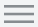
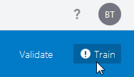
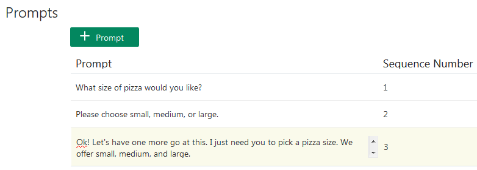

Using
Composite Bag Entities for Real-World Entity Extraction
Tutorial by Grant Ronald, Oracle
March 2019, Oracle Digital Assistant version 19.1.3
Before You Begin
This 45 minute tutorial shows how you can easily add value-setting logic with the composite bag entity.
Background
In this tutorial, you're working with a skill for ordering pizzas that has a basic dialog flow definition along with some intents and entities for extracting values for the pizza order, delivery address, and delivery location. By adding a composite bag entity to these building blocks, you can create a pizza skill that allows spontaneous, real-world interactions without having to implement custom code or write a complex and lengthy dialog flow definition. How and when the composite bag sets the values for these entities depends on the circumstance. When customers change their orders midway through the conversation, for example, the skill can gracefully update the previously extracted value and continue on without forcing them to begin their orders all over again. The skill can prompt for values when they're not included in the customer input and can validate this input as well, sending context-specific error messages when it's incorrect.
What Do You Need?
Access to an Oracle Digital Assistant instance.
The PizzaBot_Materials.zip file, which includes the starter skill, reference files, and a finished version of the skill. Click here to download this file and then unzip it to your local system.
Explore the Starter Skill
The first thing you need to do is import the starter pizza skill into your Oracle Digital Assistant instance so that you can see what you're working with.
Import the Starter Skill
Log into Oracle Digital Assistant.
Click 
in the top left corner to open the side menu.
Browse to, and then select,
CompositeBagTutorial_Starter.zip. Then click Open.
Explore and Test the Skill
Take a look at the intents and entities.
In the dashboard, click the CompositeBag_Tutorial_Starter tile to open skill in the Skill Builder. The intent editor should be selected when this development environment is launched. If it isn't, click Intents () in the left navbar.
Click the OrderPizza intent and take a look at its utterances.
Click Entities () in the left navbar.
Click the PizzaDough, PizzaSize,
PizzaTopping, and NamedLocation entities. Take a look at the values and synonyms defined for each of these Value List entities. Notice that PizzaTopping and PizzaSize entities both have prompts. Description of the illustration.
Click Flows () in the left navbar.
Notice that at this point it is just a basic flow. Were going to add the code to resolve the various pizza variables in a minute.
Click Train (located ) on the right side of the top menu.

Accept the default selections in the Train dialog and then click
Submit.
Click the Skill Tester in the left navbar.
In the chat window, enter I want a pizza and then click Enter. The skill replies with the placeholder message, This is where you will see the pizza order that's the value for the showPizzaOrder component. Throughout this tutorial, you'll update this message with Apache FreeMarker expressions that allow it to display specific entity values.
Click Reset (located at the upper left of the Skill Tester) to clear your input and then Close ().
What you just did: You've imported the basic skill into your instance and tested it to find out if its intent, entity, and dialog flow definitions are valid.
Create the Basic Composite Bag Entity
The first step is to create the composite bag itself, add the PizzaSize and PizzaType entities to it, and then add context-specific prompts and input validators for these entities.
Create the Composite Bag Entity
Click the Entities () in the left navbar and then
click + Entity.
In the Name field, replace BagItem1 with PizzaSize.
Choose PizzaSize from the Entity Name list.
The PizzaBot Skill needs to resolve the size of a pizza, but it also needs to output error messages when customers continually reply with values that can't be resolved by the PizzaSize entity's list items or synonyms. To do this, first increment Maximum User Input Attempts to 3.
Replace the existing error message (Oops I didn't understand, I need a pizza size of small, medium or large) with Sorry, this is not a valid pizza size.
Next, add a sequence of prompt messages that correspond to the allotted input attempts. Each of these messages becomes more emphatic as the sequence progresses. The skill already has the first one (What size pizza would you like?), but it doesn't have a sequence number. To add one, click Edit () , enter 1 and then click Enter.
Click Add Prompt.
Enter Please choose small, medium, or large.
Click Add Prompt.
Enter OK! Let's have one more got at this. I just need you to select a pizza size. We offer large, medium and small.

Description of the illustration.
Click Close.
The skill resolves the topping type with its PizzaTopping entity. In addition to extracting this value, the skill needs check that the customers has selected only one topping. No substations allowed! Before you can add this validation to the PizzaTopping entity, you need to add it to the composite bag. Click + Bag item.
Replace BagItem1 with PizzaTopping in the Name field, then select PizzaTopping from the Entity Name list.
What you just did: You have created a
composite bag entity that resolves pizza size and
pizza topping through context-specific prompts and error messages.
Associate The Composite Bag Entity to an Intent
In this step, you will add the composite bag entity to the OrderPizza intent to enable the skill to parse the entity values with the intent.
Select the intent icon ().
Select the OrderPizza intent and then click + Entity.
Update the Dialog Flow to Reference the Composite Bag Entity
Next, update the dialog flow with the PizzaBag entity. You need to declare a context variable for this entity and also add a definition for the System.ResolveEntities component, which tracks the values set for the setting for the entities in the PizzaBag.
Click Flows () in the left navbar.
In the editor, add a new context variable for the PizzaBag entity by entering pizza: "PizzaBag" directly beneath the iResult variable. Be sure to align this entry with the iResult variable (which is indented by four spaces):
Take note of the cancelPolicy property and the cancel action that handle the customer replies that don't provide the kind of values needed to resolve all of the entities within the composite bag, or is completely off-topic. When the input is valid, the System.ResolveEntities component routes to the showPizzaOrder state.
In the showPizzaOrder state, replace the text property definition ("This is where you will see the pizza order.") with a confirmation message, one that returns the entity values using Apache FreeMarker expressions: "Ok, so we are getting you a ${pizza.value.PizzaSize?lower_case} ${pizza.value.PizzaTopping?capitalize} pizza."
When you're done, the showPizzaOrder state should look like this:
showPizzaOrder:
component: "System.Output"
properties:
text: "OK, so we are getting you a ${pizza.value.PizzaSize?lower_case} ${pizza.value.PizzaTopping?capitalize} pizza."
transitions:
return : "showPizzaOrder"
Validate the Updated Pizza Skill
Let's validate the changes and retrain the skill.
Click Validate to check the indentation. If you're encountering syntax errors that you can't fix, replace the entire the dialog flow definition with the one in the first_cb_dialog_flow.txt file and try validating again.
Click Train.
Accept the default selections in the Train dialog and then click
Submit. Wait a moment for the training to complete.
Test the Entity Resolution
Let's test the logic that we've configured for the PizzaSize and PizzaTopping entities and the updated dialog flow.
Open the Skill Tester in the left navbar.
In the chat window, enter I want to order a medium pizza.
When prompted, enter a pizza type and then confirm that both this entity value and medium are included in the confirmation message. Click Reset.
Enter both entity values in the same request by entering I want to order a large veggie pizza. The skill should reply with the confirmation message, which includes both of the entity values. Click Reset.
Try out the error messages by first entering I want to order a pizza.
When prompted for a pizza size, enter a invalid value like huge.
Enter massive.
Enter monster. The skill should reply with the error message and with all three prompt messages. When you've reached the third attempt (the number you set for the Maximum User Input Attempts property), the System.ResolveEntities component triggers the cancel transition, routing you to maxError state. At this point, the skill outputs "OK! Let's connect you with someone to help!" This is just an output message; there's no skill-human agent integration configured for this skill.
Click Reset.
Next, test the value disambiguation by entering two different topping types in one message. For example, enter I want to order a meaty veggie pizza. The skill recognizes the invalid input by replying with "Sorry, you can only order one topping type."
Click Reset, then close the Tester.
Set a Default Value
Now that the basic composite bag implementation works, you can set a default value for the PizzaDough entity. This entity extracts values for two types of dough: regular and gluten-free. To speed the ordering process, we'll assume that most customers prefer regular crust. This will be the default value that's set for the PizzaDough entity. But when customers request gluten-free, the skill updates the PizzaDough entity value. The change is seamless (and invisible) to customers because they receive no prompts or confirmation messages. The crust request is noted and the composite bag prompts for the next entity. For your skill to handle this change, you need to configure the PizzaDough entity to accept gluten-free as an optional value.
Click Entities () in the left navbar, then select the PizzaBag entity.
Click + Bag item, then replace BagItem1 with PizzaDough.
Select PizzaDough from the Entity Name list.
In the Extraction Rule section, ensure that Out of Order Extraction is switched on.
Enter False in the Prompt for Value field.
Click Close.
Click Train.
What you just did: You've enabled the composite bag to accept customer input that overwrites a default value.
Implement the Default Value Logic in the Dialog Flow
Because gluten-free is the exception, not the rule for most of the skill's customers, you need to update the dialog flow that sets the default value, regular.
Click Flows ( ) in the left navbar.
Update the transition routing in the resolveEntities state by replacing next: "showPizzaOrder" with next: "setPizzaDough".
When you're done, the resolveEntities state should look like this:
You've now defined that when the composite bag has resolved all of the values, the dialog will then navigate to the setPizzaDough state. This state keeps the valid values for the PizzaRough entity. When these values aren't valid, then it uses the regular value. Add this state directly after the resolveEntities state.
Update text property in the showPizzaOrder state to include the dough type by adding This will be on our ${pizza.value.PizzaDough} crust.
When you're done, the showPizzaOrder state should look like this:
showPizzaOrder:
component: "System.Output"
properties:
text: "OK, so we are getting you a ${pizza.value.PizzaSize?lower_case} ${pizza.value.PizzaTopping??capitalize} pizza. This will be on our ${pizza.value.PizzaDough} crust."
transitions:
return : "showPizzaOrder"
Click Validate to check for indentation and syntax errors. If you're encountering problems that you can't fix, replace the dialog definition with second_cb_dialog_flow.txt file.
Retrain your skill.
Testing Default Values
Test the new functionality:
Open the Skill Tester in the left navbar.
Enter I want to order a large veggie pizza.
The skill confirms your order with regular crust.
Enter I want to order a veggie gluten-free pizza.
The skill prompts you for the size. After you select that, the order confirmation includes gluten-free crust.
Click Reset, then close the Tester.
What you just did: You configured the PizzaDough entity so that it can accept an optional value. In the dialog flow, you added a Apache FreeMarker expression that sets regular as default crust type using the has_content and then operators.
Validate the
Delivery Time
Part of the pizza ordering process is allowing customers to specify their preferred delivery time. But this PizzaBot doesn't offer 24-hour delivery--it must recognize when customers request a
delivery time that's outside of normal business
hours and then prompt for valid time. There's no existing entity to recognize time, so you're going to add one to the bag. Unlike the existing entities, this entity is not a Value list. It's based on the built-in TIME entity that recognizes hours, minutes and seconds.
Click Entities () in the left navbar, the select the PizzaBag entity.
Click + Bag item, then replace BagItem1 with DeliveryTime.
Select TIME from the Entity Name list.
Increment Maximum User Input Attempts to 3.
Add two prompts. Enter When can we deliver that for you? for the first prompt in the sequence. For the second, enter If you can, let us know the delivery time. We close by 10pm.
Click Add Validation Rule.
Enter ${(pizza.value.DeliveryTime.hrs?number <
10)?then('true','false')} in the Expression field.
Update the confirmation message to output the customer's delivery time by adding the following to the text property (after the PizzaTopping expression):
at ${pizza.value.DeliveryTime.date?long?number_to_time?string.short}
When you're done, the text property definition should look like this:
"OK, so we are getting you a ${pizza.value.PizzaSize?lower_case} ${pizza.value.PizzaTopping?capitalize} pizza at ${pizza.value.DeliveryTime.date?long?number_to_time?string.short}.This will be on our ${pizza.value.PizzaDough} crust."
The showPizzaOrder state should look like this:
showPizzaOrder:
component: "System.Output"
properties:
text: "OK, so we are getting you a ${pizza.value.PizzaSize?lower_case} ${pizza.value.PizzaTopping?capitalize} pizza at ${pizza.value.DeliveryTime.date?long?number_to_time?string.short}. This will be on our ${pizza.value.PizzaDough} crust."
transitions:
return : "showPizzaOrder"
Click Validate to check for indentation and syntax errors.
Test the Date Validation
Test how the skill recognizes valid delivery times based on the logic
Open the Skill Tester in the left navbar.
Enter I want to order a large veggie pizza. The skill replies with "When can we deliver that for you?" (the first prompt in the sequence).
Enter 10 (omitting the am and pm). The skill replies with the second prompt, "If you can, let us know the delivery time. We close by 10pm."
Enter 10pm. The skill replies with your error message, "Sorry, we only offer delivery up to 9:30 pm."
Enter a valid time, like 8pm. The skill notes the delivery time in the confirmation message.
Click Reset, then close the Tester.
What you just did: You configured the DeliveryTime entity so that it not only prompts for a delivery time, but also validates that input because of the comparison operators in the Apache FreeMarker expression.
You also updated the dialog flow with another
Apache FreeMarker expression that formats the customer input using a combination of the built-in date, long, and number_to_time operations.
Extract Entity Values When They're Entered Out-of-Order
Customers shouldn't have to start over when they change their orders. In this step, you configure the entities and the dialog flow , you can implement functionality within the entities and the dialog that will understand
if the user re-enters any entity value and to update that value
and acknowledge to the users input.
Click Entities () in the left navbar, then select the PizzaBag entity.
Make sure that Out of Order Extraction is switched on for both the PizzaSize and PizzaToppings entities. Click Edit () to open these entities.
Click Close after you've checked the entities.
What you just did: By ensuring that the Out of Order Extraction option is set for both of these entities, you've given the composite bag the flexibility to reset values. Here, the Out of Order Extraction option allows the skill to replace the existing pizza size value. It can be reset at any point.
Test Out-of-Order Entity Extraction for the Pizza Size and Pizza Topping Values
Let’s test how this functionality works.
Open the Skill Tester in the left navbar.
Enter I want to order a large pizza.
When prompted for pizza topping, enter veggie
please, but can you make it a medium.
Complete the order process. Make sure that the confirmation message includes medium pizza, not large.
Configure the Immediate Confirmation of the Value Change
Now that you have configured the logic within the composite bag entity to update the pizza size value, you need to skill to immediately acknowledge this change. To do this, you need to add functionality that will confirm the change before prompting for the next item value.
First, add descriptions for the PizzaBag and PizzaSize entities:
Click Entities () in the left navbar, then select the PizzaBag entity.
For the PizzaSize entity, enter size of pizza in the Description field. Then click Close.
For the PizzaTopping entity, enter pizza topping in the Description field. Then click Close.
Next, update the resolveEntities state:
Click Flows ( ) in the left navbar.
In the resolveEntities state, update the System.ResolveEntities component with the following headerText property:
headerText: "<#list system.entityToResolve.value.updatedEntities>I have updated the <#items as ent>${ent.description}<#sep> and </#items>. </#list>"
When you're done, the resolveEntities state should look like this:
resolveEntities:
component: "System.ResolveEntities"
properties:
variable: "pizza"
nlpResultVariable: "iResult"
maxPrompts: 5
headerText: "<#list system.entityToResolve.value.updatedEntities>I have updated the <#items as ent>${ent.description}<#sep> and </#items>. </#list>"
cancelPolicy: "immediate"
transitions:
actions:
cancel: "maxError"
next: "setPizzaDough"
Click Validate to check for indentation and syntax errors.
What you just did: You added entity descriptions that are mined by the Apache FreeMarker directive that defines the headerText property. The list directive iterates through the entities using the system.entityToResolve.value.updatedEntities system variable. The values are stored using the ent loop variable. The skill displays the header message that confirms the change before it prompts the customer for the next entity in the composite bag.
Test the Confirmation Alert
Let’s test how this functionality works.
Open the Skill Tester.
Enter I want to order a large pizza.
Enter veggie please, but can you make it a medium. The skill replies with "I have updated the size of pizza."
Allowing
Related Terms for an Entity Value
In addition the delivery time and the pizza itself, the pizza bot needs values for the delivery address. To capture these values, the skill already has a Value List entity called NamedAdress, which represents the different ways a user might realistically refer to an address without actually specifying the physical address. In addition to these list items, the skill needs a second entity that allows it to recognize an actual street address. On top of that, it needs to resolve both of these related entities using a single user message. A message containing home, for example, resolves both entities, for example.
First, create the entity for the street address and then add it to the composite bag:
Click Entities () in the left navbar, then select the PizzaBag entity.
What you just did: You've added two related entities to the composite bag that give customers the flexibility of entering the same information in two different formats. The Apache FreeMarker expression that you added for the DeliveryAddress entity enables the entity to prompt only when there's no value extracted for the NamedLocation entity. You linked the two entities by naming DeliveryAddress in the NamedLocation's Extract With option.
Implement the Extract With Functionality in the Dialog Flow
You now need to update confirmation message to output a hard-coded address only when the customer input contains home.
Click Flows ( ) in the left navbar.
In the showPizzaOrder state, Update confirmation message with the delivery address by adding the following Apache FreeMarker expression to the text property definition:
We are delivering to ${pizza.value.NamedLocation?has_content?then('Buckingham Palace, The Mall, Westminster, London SW1A 1AA',pizza.value.DeliveryAddress.originalString)}
When you're done, the showPizzaOrder state should look like this:
showPizzaOrder:
component: "System.Output"
properties:
text: "Ok, so we are getting you a ${pizza.value.PizzaSize} ${pizza.value.PizzaTopping} at
${pizza.value.DeliveryTime,date? long? number_to_time?('HH:mm')}. This will be on our ${pizza.value.PizzaDough} crust. We are delivering to ${pizza.value.NamedLocation?has_content?then('Buckingham Palace, The Mall, Westminster, London SW1A 1AA',pizza.value.DeliveryAddress.originalString)}"
transitions:
return : "showPizzaOrder"
What you just did: For the sake of testing,
you set a hard-coded address which represents the home
address for the logged in user (and for the sake of simplicity,
we’ve not added a hard coded office address). The composite bag
will recognize that home is a valid value and accept it. When it prompts for the address, the skill only allows a valid address, or a phrase, such as "home delivery please" that either includes the word home or one of its synonyms defined for the NamedAddress entity.
Test the Extract With Functionality
Let's test how this functionality works.
Open the Skill Tester in the left navbar.
Enter I want to order a large veggie pizza for 9pm. The skill replies with "What address can we send that to?" (the prompt for the DeliveryAddress entity).
Enter any address. For example, enter 1313 Mockingbird Lane. Note that the confirmation message includes the address that you entered. Click Reset.
Enter I want to order a large veggie pizza for 9pm again, but when prompted for an address, enter home delivery please. Note that skill maps home to the hard-coded address. If you replied with something like, My mate, Dave's, an invalid value, one that's neither a NamedAddress value or an actual address, the skill prompts with "What address can we send that to?" until you enter an address or home.
Click Reset, then close the Tester.
Enhance Error Messages
Currently, the error message for the PizzaSize entity is static. It doesn't let the customer know what's going wrong. To output messages that reflect the incorrect user input, you need to update the entity's error message with an Apache FreeMarker expression.
Click Entities () in the left navbar and then open the PizzaBag entity.
Select the PizzaSize entity and then click Edit.
Update the Error Message text with the following Apache FreeMarker expression:
When you're done, the message will be: Sorry,
'${system.entityToResolve.value.userInput!'this'}' is not a
valid size of pizza. Description
of the illustration.
What you just did: You've implemented "reflective listening” approach by adding the Apache FreeMaker expression with the system.entityToResolve.value.userInput property.
Test the Rich Error Messaging
Let’s do one final test.
Open the Skill Tester from the left navbar.
Enter I want to order a veggie pizza for 9pm.
When the skills replies with the first prompt in the sequence ("What size of pizza would you like?"), enter huge. Because of the userInput property is appended to the system.entityToResolve.value variable in the expression, the skill replies with "Sorry, huge is not a valid size of pizza. Please choose small, medium
or large pizza."
Well done! Your skill can set and reset values. By validating the customer input, it's also less error-prone.
 Using
Composite Bag Entities for Real-World Entity Extraction
Using
Composite Bag Entities for Real-World Entity Extraction Before You Begin
Before You Begin Explore the Starter Skill
Explore the Starter Skill

 Create the Basic Composite Bag Entity
Create the Basic Composite Bag Entity

 Set a Default Value
Set a Default Value Validate the
Delivery Time
Validate the
Delivery Time{kind=link}
 Extract Entity Values When They're Entered Out-of-Order
Extract Entity Values When They're Entered Out-of-Order Allowing
Related Terms for an Entity Value
Allowing
Related Terms for an Entity Value Enhance Error Messages
Enhance Error Messages